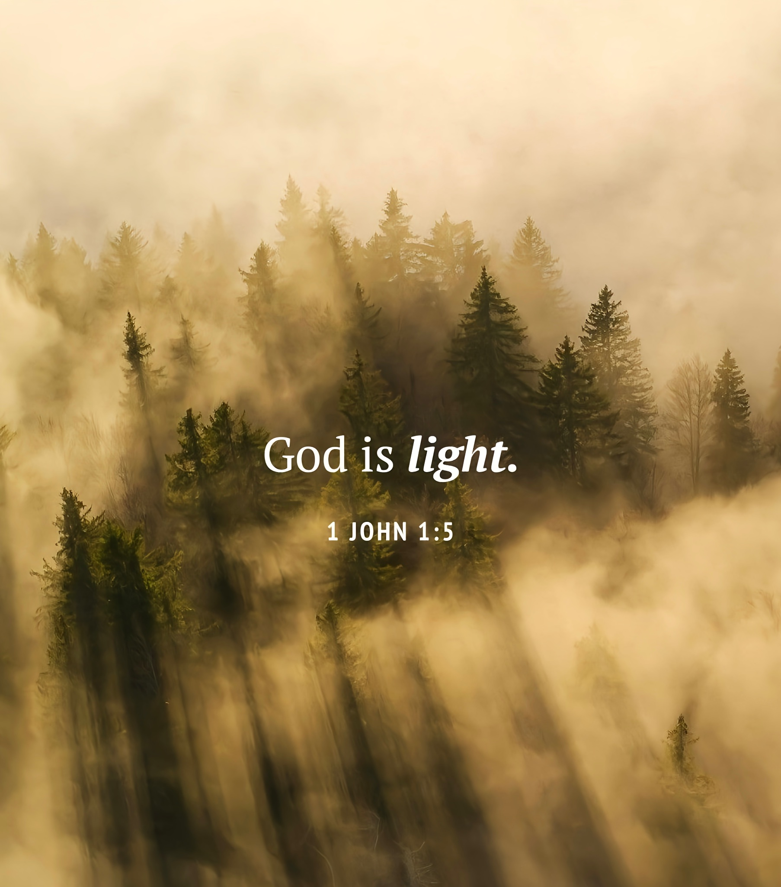
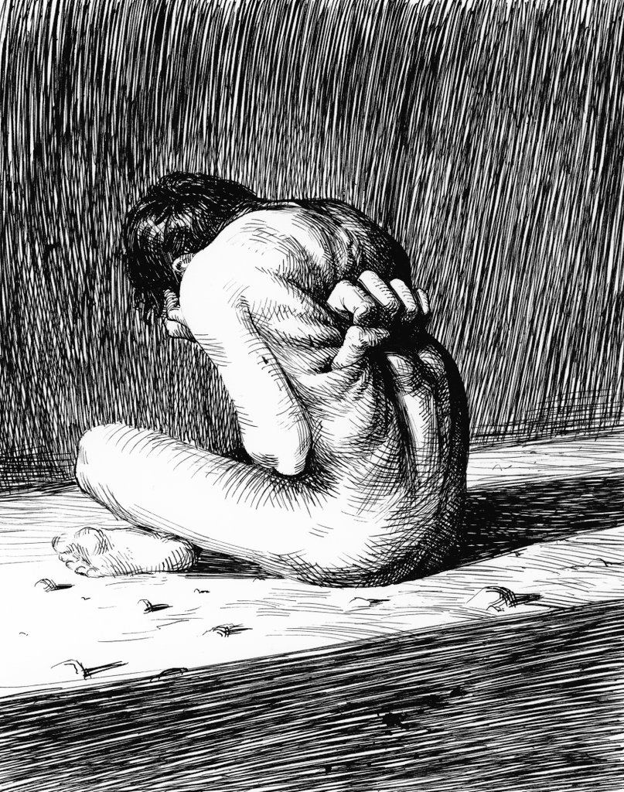
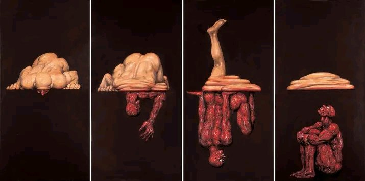
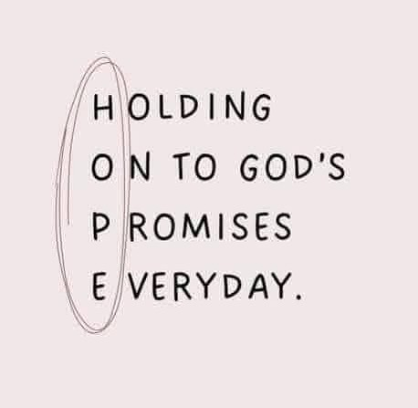
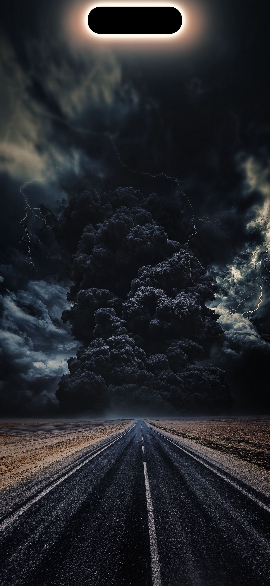
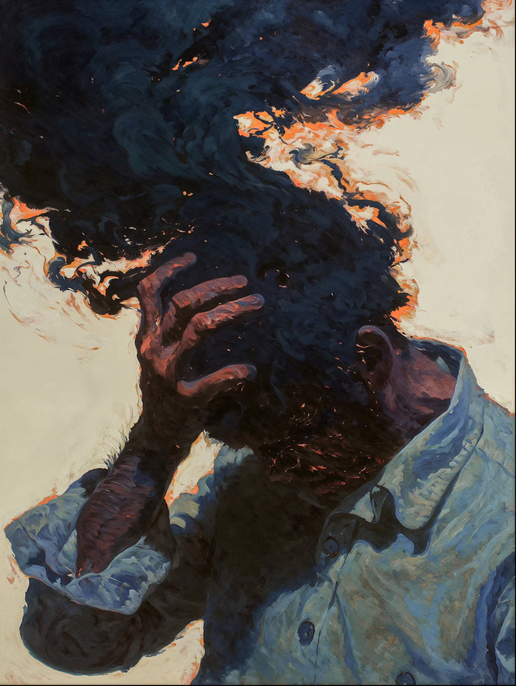

Finding Light in Seasons of Darkness
When the nights feel endless, hope can seem far. Yet even the smallest light breaks darkness
Read More →Stories, reflections, and words of light to guide through the dark.

When the nights feel endless, hope can seem far. Yet even the smallest light breaks darkness
Read More →
Healing isn’t just about willpower—it’s about surrender, truth, and walking with Christ in honesty...
Read More →
Isolation can magnify pain, but community brings perspective, strength, and shared healing...
Read More →
Sometimes prayer isn’t polished—it’s raw, messy, and full of questions. And that’s exactly where healing begins...
Read More →
Healing doesn’t happen overnight. Small, faithful steps create a rhythm of renewal and lasting change...
Read More →
Darkness is not the absence of Godx, but his hiding place when the light fades, revelation often begins...
Read More →
When thoughts roar louder than faith, peace feals distant. But even in the storm, grace does not retreat...
Read More →Walking in light brings freedom and peace as it exposes the deeds done in darkness, Light brings clarity and direction..
Read More →Being still in the midst of anxiety, depression, adversities and cruelty is true surrender and act of Faith to the one who promised peace that surpasses understanding...
Read More →Wake up, sleeper. rise from the dead and Christ will shine on you...
Read More →